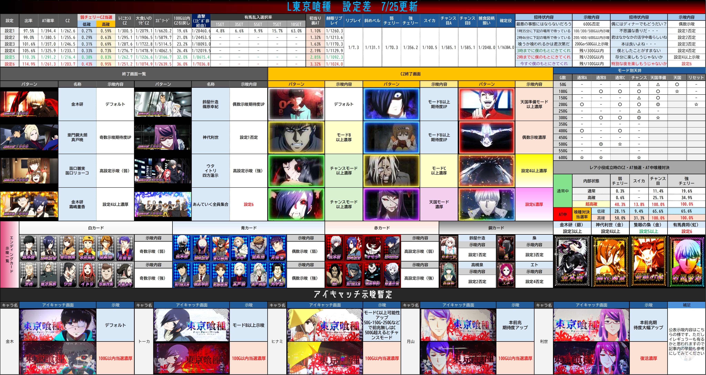
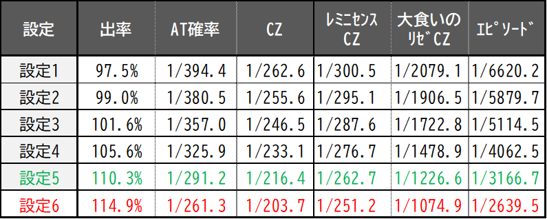
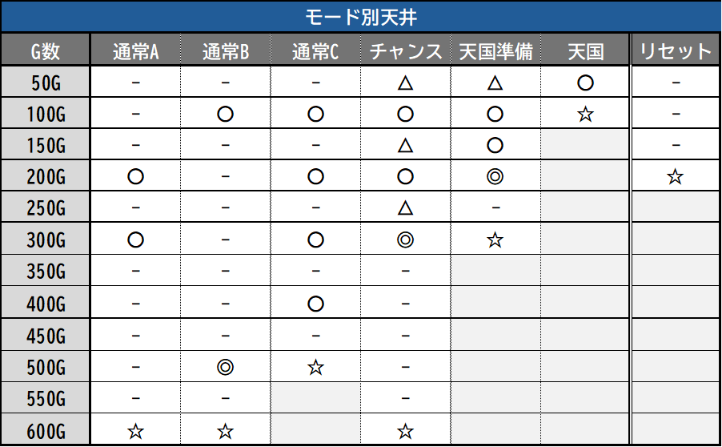

①AT初当たり確率
300G以内の当選割合
低設定43%〜高設定61%
800G以内の当選割合
低設定86%〜高設定96%
天国準備以上選択の割合に設定差があるためと思われる
後ヅモの際、800以上ハマリが2回以上あれば要注意
②CZ初当たり確率
101G〜150Gでの当選
低設定25%〜高設定35%
③大喰いのリゼ出現
設定1〜6：1/2000〜1/1000
④エピソードボーナス確率
設定1〜6：1/6620〜1/2640
⑤ED中キャラカード
赤(青文字)カードの出現率
低設定5%〜高設定20%を目安に
⑥AT終了画面
高設定示唆(弱)
設定1〜3：2.5% / 設定4以上：7%
高設定示唆(強)
設定1〜3：1% / 設定4以上：4%
高設定示唆(強)確認である程度粘れる要素
⑦AT直撃確率
設定1〜6：1/28460〜1/7036
※リプレイ契機：通常時ゾーン・レア役以外で急に前兆が来るやつ
⑧AT引き戻し確率
低設定〜高設定：7%〜13%
※有馬ジャッジ後はほぼ引き戻さないため除外を推奨
設定示唆一覧

簡易スペック表

モードについて
